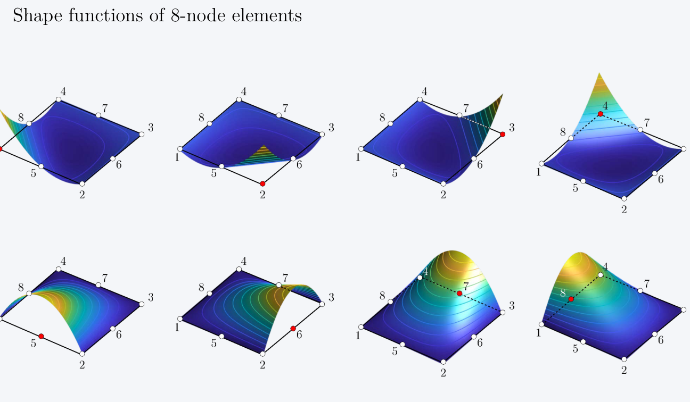
Figure 5: Shape functions of 8-node elements - 3D visualization for corner and mid-side nodes
Introduction – Numerical Integration
Gauss integration is adopted for integrating the stiffness matrix. The numbering of the integration points, their position and the corresponding weights are summarized here below up to the \(3 \times 3\) integration scheme.
Open-hole test: membrane with center hole, loaded in traction (1/4 of the structure due to the double symmetry of the problem)
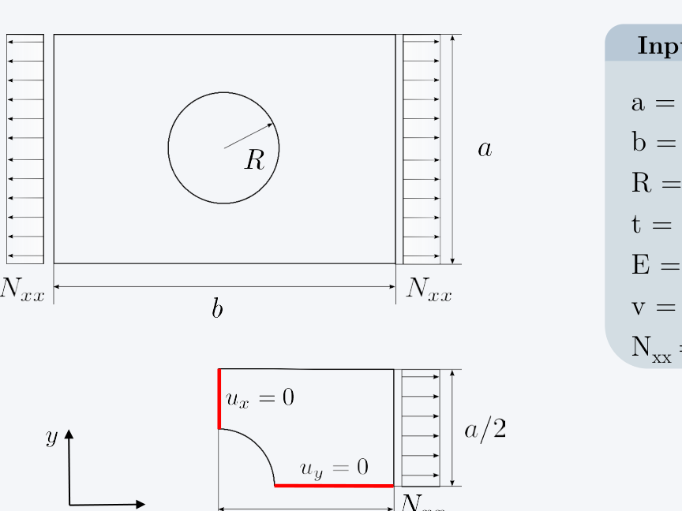
Figure 7: Open-hole test problem - full geometry (top) and quarter symmetry model (bottom)
Input Data
\(a = 100 \text{ mm}\) (height)
\(b = 150 \text{ mm}\) (width)
\(R = 25 \text{ mm}\) (hole radius)
\(t = 1 \text{ mm}\) (thickness)
\(E = 72 \text{ GPa}\) (Young's modulus)
\(\nu = 0.3\) (Poisson's ratio)
\(N_{xx} = 20 \text{ N/mm}\) (applied load)
Mesh and Numbering
The global reference system, the node and element numbering are taken as reported in the figure (these choices are clearly arbitrary).
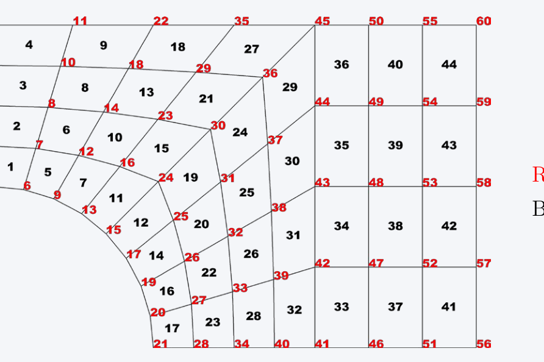
Figure 8: Finite element mesh showing node IDs (red) and element IDs (black)
Overview of the Program – Main
The structure of the program consists of three distinct steps:
the preparation of data (pre-process)
the analysis of the structure (solution)
analysis of results (post-processing)
The three steps are accomplished by the three functions input_open_hole_bilinear_44_els (example taken as reference), fem_solver and plot_def_vs_undef (other post-processing functions can be considered)
Three structures are used in the program: MODEL, PROPERTY, POST. Most of data are stored in MODEL, whose fields are:
MODEL =
struct with fields:
elements: [44×4 double] % [ID_node1 ID_node2 ID_node3 ID_node4]int_rule: [1×1 struct] % structure with integration points and weightsnodes: [60×2 double] % [x_coord y_coord]pos: [60×2 double] % position of the nodal dofs in the global vectorndof: 120 % total number of dofsnels: 44 % total number of elementsnnodes: 60 % total number of nodeseltype: 4 % number of nodes per elementK: [107×107 double] % stiffness matrix (constrained structure)F: [107×1 double] % vector of loads (constrained structure)constr_dofs: [13×1 double] % vector of constrained dofsfree_dofs: [1×107 double] % vector of free dofsnfree_dofs: 107 % free degrees of freedomptrs: [44×8 double] % vectors of pointersK_unc: [120×120 double] % stiffness matrix (unconstrained structure)F_unc: [120×1 double] % vector of loads (unconstrained structure)U: [107×1 double] % global vector of displacements (constr struct)U_unc: [120×1 double] % global vector of displacements (unconstr struct)
The structure PROPERTY stores the elastic properties of the membrane:
PROPERTY =
struct with fields:
t: 1.00 % thicknessA: [3×3 double] % membrane constitutive law
The structure POST collects data evaluated during post-processing:
POST =
struct with fields:
sxx_ip: [44×4 double] % stress sxx at the integration pointssyy_ip: [44×4 double] % stress syy at the integration pointssxy_ip: [44×4 double] % stress sxy at the integration pointssxx: [44×4 double] % stress sxx at the cornerssyy: [44×4 double] % stress syy at the cornerssxy: [44×4 double] % stress sxy at the cornerssxx_centroid: [44×1 double] % stress sxx at the centroidsyy_centroid: [44×1 double] % stress syy at the centroidsxy_centroid: [44×1 double] % stress sxy at the centroid
Step 1, Pre-process: input_model
The input file is written from the user by specifying the characteristics of the model to be analyzed. The data are organized into the structure INPUT, which is divided into different fields:
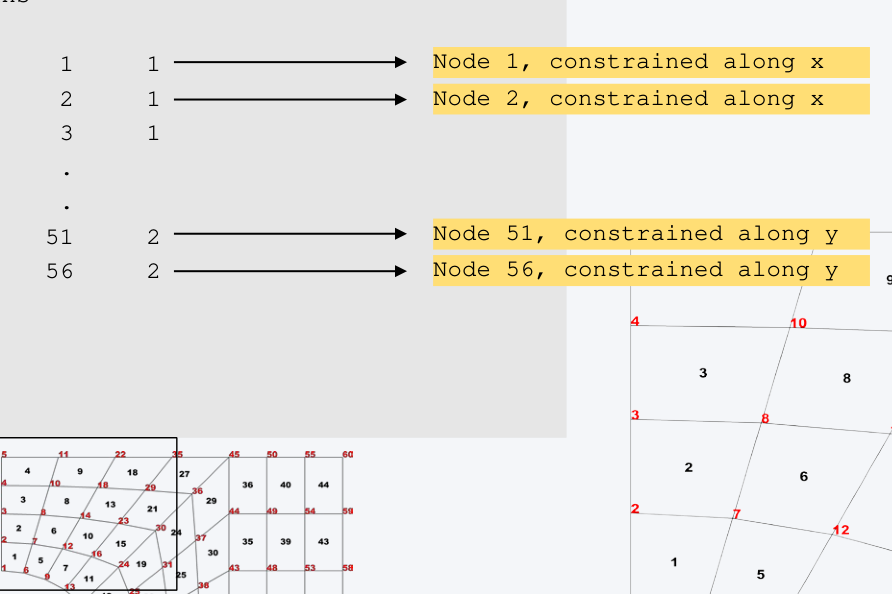
Figure 10: Boundary conditions - nodes constrained along x (left edge) and y (bottom edge) directions
INPUT.spc =
1 1 % Node 1, constrained along x
2 1 % Node 2, constrained along x
3 1
...
51 2 % Node 51, constrained along y
56 2 % Node 56, constrained along y
Applied Loads
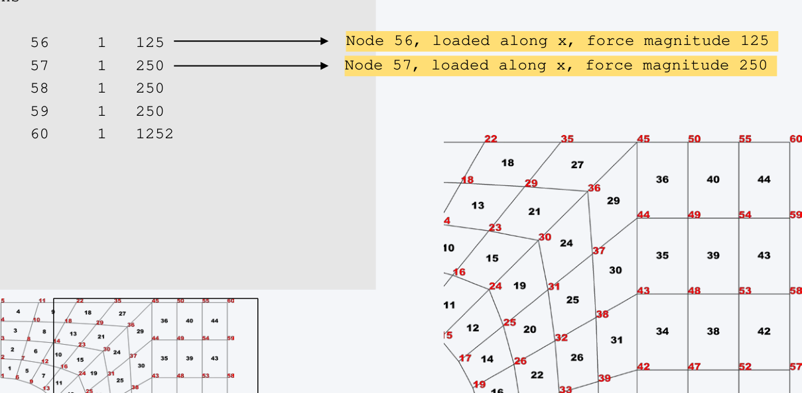
Figure 11: Applied loads at right edge nodes
INPUT.load =
56 1 125 % Node 56, loaded along x, force magnitude 125
57 1 250 % Node 57, loaded along x, force magnitude 250
58 1 250
59 1 250
60 1 125
Step 2, Solution: fem_solver
The function fem_solver represents the core of the program, and is divided into a number of functions:
function [ MODEL, PROPERTY, POST ] = fem_solver( INPUT )
% --- Set model
[ MODEL, PROPERTY, POST ] = set_model( INPUT );
% --- Set pointers
MODEL = set_pointers( MODEL );
% --- Build & assembly matrices
MODEL = build_K_matrix( MODEL, PROPERTY );
% --- Impose constraints and solve
MODEL = solve_structure( MODEL );
% --- Stress recovery
POST = stress_recovery( MODEL, PROPERTY, POST );
function MODEL = build_K_matrix( MODEL, PROPERTY )
A = PROPERTY.A;
% --- Integration rule parameters
xGauss = MODEL.int_rule.x;
wGauss = MODEL.int_rule.w;
nint_p = length( xGauss );
for i = 1 : MODEL.nels % Loop over the elements% --- Initialize
K_el = zeros( 2 * MODEL.eltype, 2 * MODEL.eltype );
% --- Matrix of nodal coordinates
el_nodes = MODEL.elements( i, : );
xy_nodes = [ MODEL.nodes( el_nodes, 1 ) MODEL.nodes( el_nodes, 2 ) ];
% --- Integrate stiffness matrixfor iG = 1 : nint_p % Loop over x- and y-directionfor jG = 1 : nint_p % for numerical integration
xi = xGauss( jG );
eta = xGauss( iG );
% Build matrix B and the Jacobian of the isoparametric transformation
[ B, detJ ] = get_B_matrix( xi, eta, xy_nodes );
% --- Stiffness matrix
K_el = K_el + wGauss( iG ) * wGauss( jG ) * ( B' * A * B * detJ );
endend% --- Assemble contribution
ptrs = MODEL.ptrs( i, : );
MODEL.K( ptrs, ptrs ) = MODEL.K( ptrs, ptrs ) + K_el;
end
Step 2, Solution: stress_recovery
Once the nodal displacements are available, it is possible to determine the strains and the stresses in any desired position. Generally, a good strategy consists in evaluating the stresses at the integration points (another common approach consists in evaluating the stresses at the "Barlow points", viz. the integration points corresponding to an integration scheme with N-1 points)
Stresses at the Integration Points
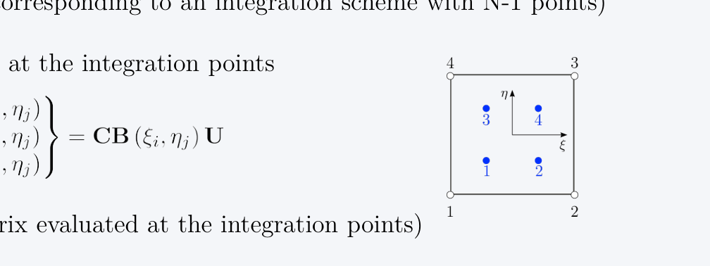
Figure 12: 4-node element with 2×2 integration points for stress evaluation
In general, it can be useful to evaluate the stresses in correspondence of the nodes. Indeed, the integration points are inside the element, while the maximum levels of stresses can be reached on the outer positions (consider, for instance, the planar bending of a beam). The direct evaluation of the stresses is not a good choice, as poor quality results are obtained.
Interpolation Scheme
A common strategy consists in adopting an interpolation scheme, where a polynomial expression, consistent with the order of the integration rule adopted, is used.
For a \(2 \times 2\) integration rule, the stresses are available at four integration points. The interpolation scheme is then taken in the form:
and the linear system to be solved has dimension 9.
Exercise
Complete the program by writing the missing parts of the code; consider both 4- and 8-node elements
Analyze the problems reported next to compare the correctness of your implementation
Results: Jacobians
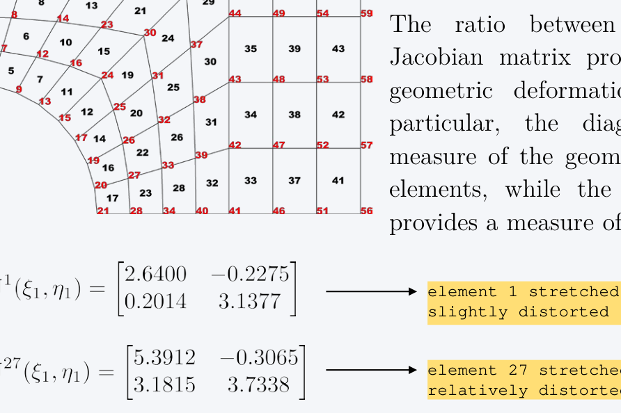
Figure 13: Finite element mesh showing elements analyzed for Jacobian comparison
\(\mathbf{J}^i(\xi_j, \eta_j)\): Jacobian of the element i at the integration point j
The ratio between the elements of the Jacobian matrix provides a measure of the geometric deformation of the element. In particular, the diagonal terms furnish a measure of the geometric «stretching» of the elements, while the extra-diagonal elements provides a measure of the distortion.
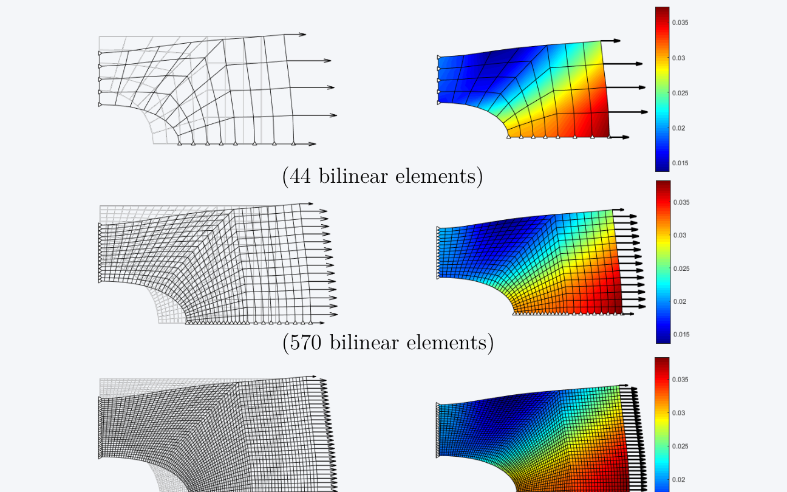
Figure 14: Deformed shape (left) and displacement contours (right) for meshes with 44, 570, and 2400 bilinear elements
Results: Stress Components Contour
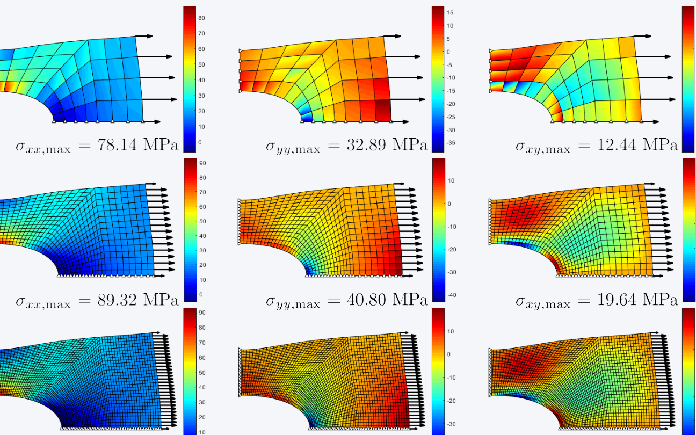
Figure 15: Stress component contours (\(\sigma_{xx}\), \(\sigma_{yy}\), \(\sigma_{xy}\)) for three mesh refinement levels
Maximum Stress Values
Mesh
\(\sigma_{xx,\max}\) (MPa)
\(\sigma_{yy,\max}\) (MPa)
\(\sigma_{xy,\max}\) (MPa)
44 elements
78.14
32.89
12.44
570 elements
89.32
40.80
19.64
2400 elements
90.31
41.91
21.45
Results: Summary and Comments
Summary of Results: Displacements, Stresses, Energies
4-nodes
8-nodes
44
570
2400
44
570
2400
\(U_{x,max}\) (mm)
0.0372
0.0382
0.0383
0.0381
0.0383
0.0383
\(U_{y,max}\) (mm)
0.0195
0.0209
0.0210
0.0208
0.0210
0.0210
\(|\sigma_{xx,max}|\) (MPa)
78.1374
89.3160
90.9138
86.2614
90.4516
91.3662
\(|\sigma_{yy,max}|\) (MPa)
32.8878
40.8042
41.9088
38.8173
41.6473
42.2574
\(|\sigma_{xy,max}|\) (MPa)
12.4434
19.6433
21.4515
17.7873
21.9655
22.7565
\(U\) (N mm)
16.1996
16.5499
16.5738
16.5151
16.5776
16.5807
\(\Pi = U + V\) (N mm)
-16.1996
-16.5499
-16.5738
-16.5151
-16.5776
-16.5807
Key Observations
Convergence: The convergence of the solution can be observed both in terms of displacements and stress components. The quantities are referred to one single point, thus provide information on the local behaviour.
Displacement underestimation: The displacements tend to be underestimated. In this example, coarser meshes are associated with smaller displacements with respect to finer ones. Indeed a coarse mesh is stiffer in comparison to a finer one.
Stress underestimation: Similarly, the stresses tend to be underestimated. This is an important aspect to take into account during the analysis phase, as unconservative results can be obtained due to an excessively coarse mesh.
Different convergence rates: The results illustrate the different rate of convergence between displacements and stresses. While a 4-node mesh with 570 elements provides a good estimate of the displacement field, a higher refinement level is needed to properly capture the stress field.
h-refinement vs p-refinement: The quality of the prediction can be improved by reducing the size of the mesh (h-refinement), or by increasing the order of the interpolating scheme (p-refinement).
Energy convergence: The strain energy U (or, equivalently, the total potential energy) provides a good measure of the convergence at global level. Note that the strain energy increases as the refinement of the mesh is increased. Indeed, a less stiff model is capable of storing a higher amount of deformation energy.
Results: Numerical Integration Comments
Gauss Integration Remarks
An integration of order P allows to integrate exactly a polynomial expressions of order 2P-1. For instance, a cubic expression can be integrated exactly by taking P=2.
If the element is regular (no distortion), the stiffness matrix is quadratic (in case of 4-node elements). A rule of order 2 suffices for integrating exactly. This is true if and only if the elements are not distorted. Indeed, the effect of distortion is to transform the expression of the stiffness contribution into a more complex function via the Jacobian of the transformation. In the presence of distorted elements, an integration of higher order than 2 may be needed even for bilinear elements.
Stiffness Matrix: Distorted Element (Element 27)
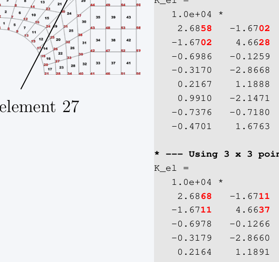
Figure 16: Element 27 - distorted element near hole region
Due to the distorted shape of the element, the contributions of the stiffness matrix obtained using 2 and 3 points are different:
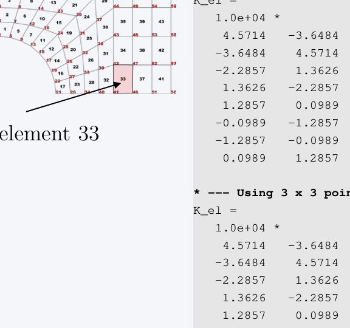
Figure 17: Element 33 - regular rectangular element
The element is regular and is integrated exactly using \(2 \times 2\) points (no distinction exists with the stiffness matrix obtained with \(3 \times 3\) points).
Strain Energy vs Integration Rule
Int rule
4-nodes
8-nodes
\(1 \times 1\)
\(2 \times 2\)
\(3 \times 3\)
\(1 \times 1\)
\(2 \times 2\)
\(3 \times 3\)
44 els
Hourgl.
16.1996
16.1989
/
16.5206
16.5151
570 els
16.5724
16.5499
16.5499
/
16.5776
16.5776
2400 els
16.5793
16.5738
16.5738
/
16.5807
16.5807
For a given mesh, the effect of increasing the number of integration points is to reduce the strain energy. This means that improving the quality of the integration leads to stiffer model, viz. lower strain energy (recall that lower strain energy means a stiffer structure).
For refined meshes (2400 els) the elements are very small, thus the distortion is slight. Improving the quality of the integration has a minor impact on the solution, as the elements are almost regular.
Hourglassing Effects
Note that reducing the order of integration can lead to hourglassing effects, as in the case of 44 bilinear elements integrated with one single point. This is clearly visible from the deformed pattern which is characterized by the typical hourglass shape of some elements.
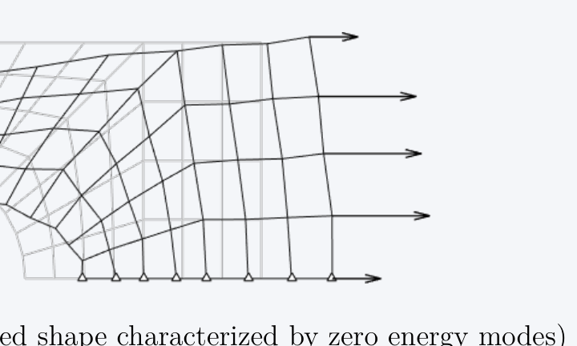
Figure 18: Deformed shape characterized by zero energy modes (hourglassing)
Results: Comparison with Abaqus
Displacement Field
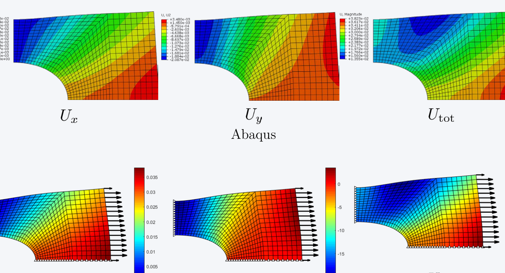
Figure 19: Comparison of displacement field contours (\(U_x\), \(U_y\), \(U_{tot}\)) between Abaqus (top) and Matlab (bottom)
Stress Field
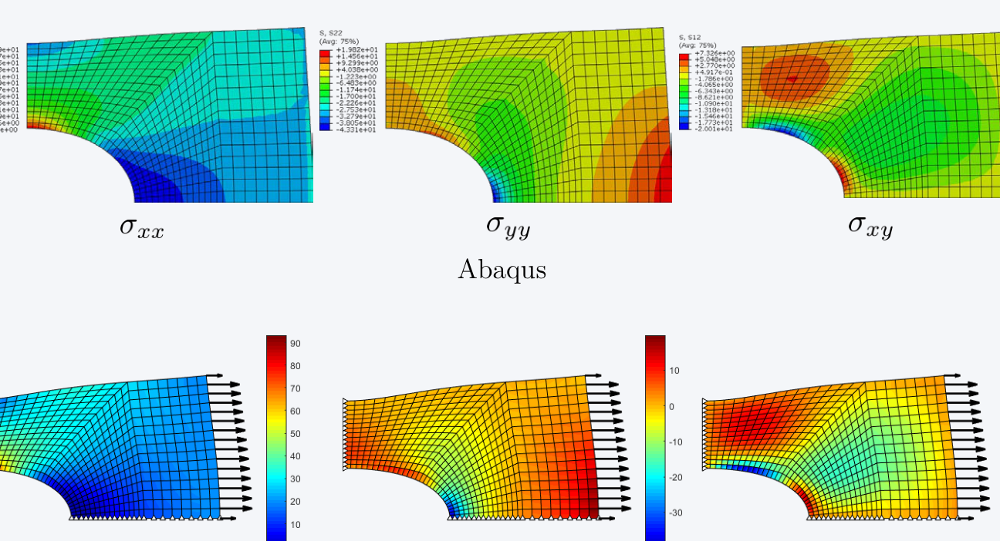
Figure 20: Comparison of stress field contours (\(\sigma_{xx}\), \(\sigma_{yy}\), \(\sigma_{xy}\)) between Abaqus (top) and Matlab (bottom)
Numerical Verification: Element 346
Stresses at the nodes of element 346 (mesh 570 elements, 4-nodes):
Abaqus .dat file
THE FOLLOWING TABLE IS PRINTED AT THE NODES
FOR ELEMENT TYPE M3D4 AND ELEMENT SET EGLOBAL
ELEMENT ND FOOT- S11 S22 S12
NOTE
346 1 93.19 5.183 0.6192
346 17 92.96 5.657 -4.854
346 18 74.91 0.1884 -4.102
346 2 75.06 -0.2584 0.8615
Matlab results
>> POST.sxx(346,:)
ans =
93.1938 75.0562 74.9058 92.9648
>> POST.syy(346,:)
ans =
5.1829 -0.2584 0.1884 5.6567
>> POST.sxy(346,:)
ans =
0.6192 0.8615 -4.1022 -4.8540
Validation: The stress values from the Matlab implementation match those from Abaqus, confirming the correctness of the finite element code.